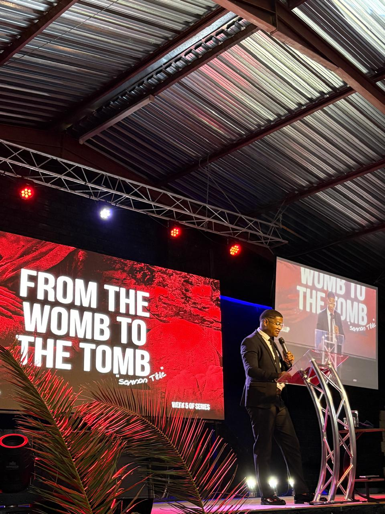

Pastor first.
Before anything else, Chaeslin is a pastor at Crossover City Church. Leading, teaching and walking with people through their lives is where the rest of his work comes from.
A pastor at heart.
Chaeslin has spent years serving as a pastor, and it shapes how he leads everywhere else. Preaching is part of it, but most of the calling happens quietly — in conversations, in following up with people, and in showing up consistently for a community he's grateful to walk alongside.


Leadership that serves people, not titles.
The same instinct that shows up in his mentorship and consulting work shows up here too. It means paying attention to where people actually are, not where they're supposed to be, and helping them take an honest next step. For Chaeslin, church leadership has always been about developing people as much as anything that happens on a Sunday.
A few messages worth hearing.
A handful of messages from Crossover City Church, for anyone who wants to hear more of this side of his work.